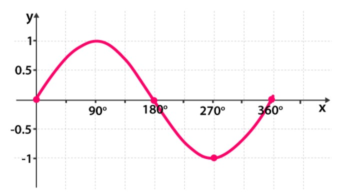
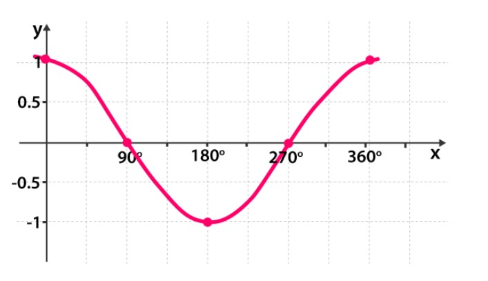
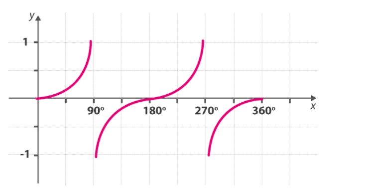
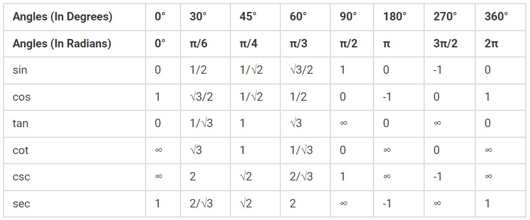
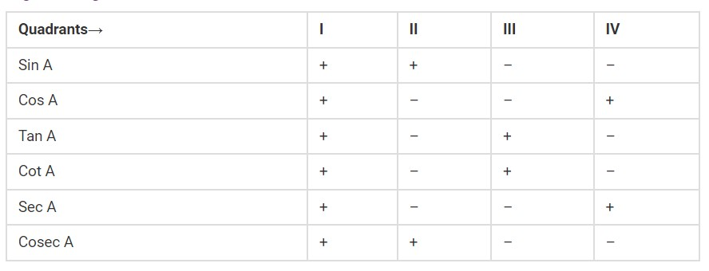
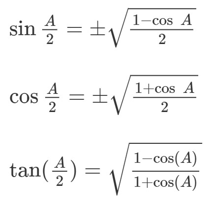
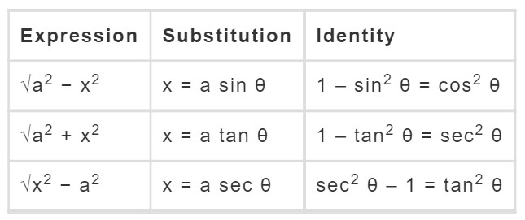
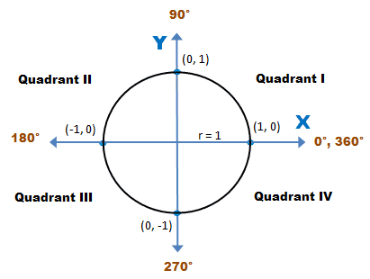

TRIGONOMETRY
Trigonometry is the relationship between the sides and angles of a right-angled triangle.
Following are the size basic trigonometric function :

- sin = Opposite side/ Hypotenuse
- cos = Adjacent side / Hypotenuse
- tan = Opposite side / Adjacent side
- cosec = Hypotenuse / Opposite side
- sec = Hypotenuse / Adjacent side
- cot = Adjacent side / Opposite side
Graphs of Basic Trigonometry function :
Following are the domain and range of each function :
- sin : R → [– 1, 1]
- cos : R → [– 1, 1]
- tan : R – { x : x = (2n + 1) π/2, n ∈ Z} →R
- cot : R – { x : x = nπ, n ∈ Z} →R
- sec : R – { x : x = (2n + 1) π/2, n ∈ Z} →R – (– 1, 1)
- csc : R – { x : x = nπ, n ∈ Z} →R – (– 1, 1)
1.) sin function:

2.) cos function:

3.) tan function:

Trigonometry Angles :
The trigonometry angles commonly used in trigonometry problems are 0°, 30°, 45°, 60° and 90°.

Basic Trigonometric indenties :
- sin²θ + cos²θ = 1
- tan²θ + 1 = sec²θ
- cot²θ + 1 = cosec²θ
- sin 2θ = 2 sin θ cos θ
- cos 2θ = cos²θ – sin²θ
- tan 2θ = 2 tan θ / (1 – tan²θ)
- cot 2θ = (cot²θ – 1) / 2 cot θ
Reciprocal Identities :
- cosec θ = 1/sin θ
- sec θ = 1/cos θ
- cot θ = 1/tan θ
- sin θ = 1/cosec θ
- cos θ = 1/sec θ
- tan θ = 1/cot θ
Sine and Cosine Laws :
If A, B and C are angles and a, b and c are the sides of a triangle, then,
- a/sinA = b/sinB = c/sinC
- c² = a² + b² – 2ab • cos C
- a² = b² + c² – 2bc • cos A
- b² = a² + c² – 2ac • cos B
Basic Trigonometric sum and difference indenties :
For angles u and v, we have the following relationships :
- sin(u + v) = sin(u) • cos(v) + cos(u) • sin(v)
- cos(u + v) = cos(u) • cos(v) – sin(u) • sin(v)
- tan(u+v) = (tan(u) + tan(v))/(1−tan(u)) • tan(v)
- sin(u – v) = sin(u) • cos(v) – cos(u) • sin(v)
- cos(u – v) = cos(u) • cos(v) + sin(u) • sin(v)
- tan(u-v) = (tan(u) − tan(v))/(1+tan(u)) • tan(v)
Periodicity Identities (in Radians) :
These formulas are used to shift the angles by π/2, π, 2π, etc. :
- sin (π/2 – A) = cos A , cos (π/2 – A) = sin A)
- sin (π/2 + A) = cos A , cos (π/2 + A) = – sin A
- sin (3π/2 – A) = – cos A , cos (3π/2 – A) = – sin A
- sin (3π/2 + A) = – cos A , cos (3π/2 + A) = sin A
- sin (π – A) = sin A , cos (π – A) = – cos A
- sin (π + A) = – sin A , cos (π + A) = – cos A
- sin (2π – A) = – sin A , cos (2π – A) = cos A
- sin (2π + A) = sin A , cos (2π + A) = cos A
Periodicity Identities (in Degrees) :
- sin(90°−x) = cos x
- cos(90°−x) = sin x
- tan(90°−x) = cot x
- cot(90°−x) = tan x
- sec(90°−x) = csc x
- csc(90°−x) = sec x
Sign of Trigonometric Functions :

- sin(-θ) = -sin θ
- cos(-θ) = cos θ
- tan(-θ) = -tan θ
- cot(-θ) = -cot θ
- sec(-θ) = sec θ
- cosec(-θ) = -cosec θ
Double Angle Identities :
- sin(2x) = 2sin(x) • cos(x) = [2tan x/(1+tan² x)]
- cos(2x) = cos2(x)–sin2(x) = [(1-tan2 x)/(1+tan² x)]
- cos(2x) = 2cos2(x)−1 = 1–2sin²(x)
- tan(2x) = [2tan(x)]/ [1−tan²(x)]
- sec (2x) = sec2 x/(2-sec2 x)
- csc (2x) = (sec x. csc x)/2
Triple Angle Identities :
- sin 3x = 3sin x – 4sin3x
- cos 3x = 4cos3x-3cos x
- tan 3x = [3tanx-tan^3x]/[1-3tan²x]
- cot 3x = [cot^3x-3cotx]/[3cot²x-1]
Half Angle Identities :

Product identities :
- sinx • cosy = (sin(x+y)+sin(x−y))/2
- cosx • cosy = (cos(x+y)+cos(x−y))/2
- sinx • siny = (cos(x-y)-cos(x+y))/2
Sum to Product identities :
- sinx + siny = 2sin((x+y)/2) • cos((x-y)/2)
- sinx - siny = 2cos((x+y)/2) • sin((x-y)/2)
- cosx + cosy = 2cos((x+y)/2) • cos((x-y)/2)
- cosx - cosy = -2sin((x+y)/2) • sin((x-y)/2)
Inverse Trigonometry Formulas :
- sin^-1 (1/a) = cosec^-1(a) , a ≥ 1 or a ≤ – 1
- cos^-1(1/a) = sec^-1(a) , a ≥ 1 or a ≤ – 1
- tan^-1(1/a) = cot^-1(a) , a>0
- sin^-1(–a) = – sin^-1(a) , a ∈ [– 1, 1]
- tan^-1(–a) = – tan^-1(a) , a ∈ R
- cosec^-1(–a) = –cosec^-1(a) , | a | ≥ 1
- cos^-1(–a) = π – cos^-1(a) , a ∈ [– 1, 1]
- sec^-1(–a) = π – sec^-1(a) , | a | ≥ 1
- cot^-1(–a) = π – cot^-1(a) , a ∈ R
Addition Properties :
- sin^-1a + cos^-1a = π/2 , a ∈ [– 1, 1]
- tan^-1a + cot^-1a = π/2 , a ∈ R
- cosec^-1a + sec^-1a = π/2 , | a | ≥ 1
- tan^-1a + tan^1 b = tan^-1 [(a+b)/1-ab] , ab<1
- tan^-1a – tan^-1 b = tan^-1 [(a-b)/1+ab] , ab>-1
- tan^-1a – tan^-1 b = π + tan^-1[(a+b)/1-ab] , ab > 1 ; a,b > 0
Twice of Inverse of tan Function :
- 2tan^-1a = sin^-1 [2a/(1+a²)] , |a| ≤ 1
- 2tan^-1a = cos^-1[(1-a²)/(1+a²)] , a ≥ 0
- 2tan^-1a = tan^-1[2a/(1+a²)] , – 1 < a < 1
Inverse Trigonometry Substitution :

Complementary Ratios :

Quadrant I :
- sin(π/2−θ) = cos θ
- cos(π/2−θ) = sin θ
- tan(π/2−θ) = cot θ
- cot(π/2−θ) = tan θ
- sec(π/2−θ) = cosec θ
- cosec(π/2−θ) = sec θ
Quadrant II :
- sin(π−θ) = cos θ
- cos(π−θ) = -cos θ
- tan(π−θ) = -tan θ
- cot(π−θ) = – cot θ
- ec(π−θ) = -sec θ
- cosec(π−θ) = cosec θ
Quadrant III :
- sin(π+ θ) = – sin θ
- cos(π+ θ) = – cos θ
- tan(π+ θ) = tan θ
- cot(π+ θ) = cot θ
- sec(π+ θ) = -sec θ
- cosec(π+ θ) = -cosec θ
Quadrant IV :
- sin(2π− θ) = – sin θ
- cos(2π− θ) = cos θ
- tan(2π− θ) = – tan θ
- cot(2π− θ) = – cot θ
- sec(2π− θ) = sec θ
- cosec(2π− θ) = -cosec θ